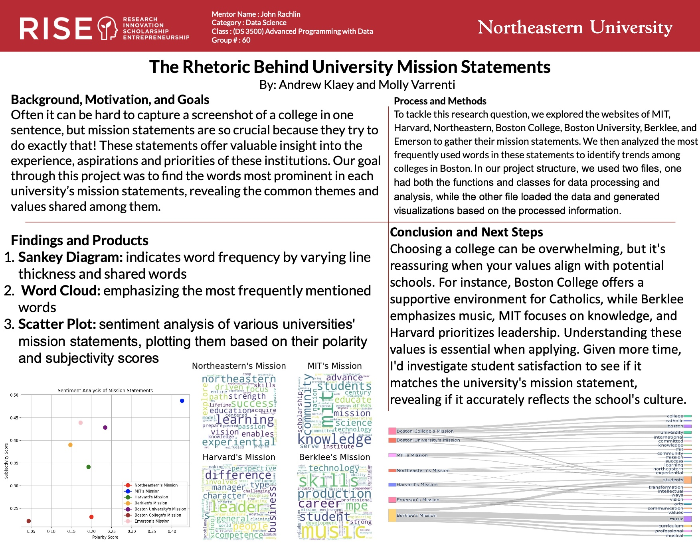

An Analysis of AI Curricula Among Boston-Based Colleges and Universities | Python (Boston, MA, Spring 2025)
• Below you will see a research project that I recently completed alongside my peer Sasha DiVall, and our Professor, Dr. John Rachlin. This project was a semester long effort that will be presented on April 11th

The Rhetoric Behind University Mission Statements | Python (Boston, MA, Spring 2024)
• Below you will see a research project that I completed in the spring of 2024 alongside my peer Andrew Klaey for our Advanced Programming with Data class (python). This project was a month long effort that was presented in class to our peers discussing colleges in Boston and their mission statements
Predicting the Most Popular Movie of 2025 | Python Boston, MA, Spring 2024
• Below you will see a downloadable pdf of a research project that I completed in the spring of 2024 for my Foundations of Data Science (python) class. This project was a two month long effort that was worked on with Benjamin Weiss, Sheena Kaw, and myself. This project was then presented in class to my peers discussing which attributes contribute most to creating the most popular movie of 2024. From the attributes that were found from our data scraping, we were able to curate what would make a movie in 2024 most popular based on season, length of movie, and actors
Download PDF of DS3000 Final Project ReportWhich LLM is the Best at Writing Code | Python Boston, MA, Spring 2025
• Below you will see a website that I have a repository for on my github, and there you are able to see what the final project looked like. • Download PDF of DS3000 Final Project Report